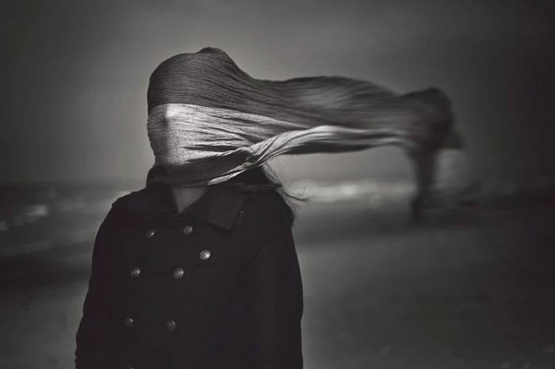

Photography is the art of capturing light with a camera, usually via a digital sensor or film, to create an image. With the right camera equipment, you can even photograph wavelengths of light invisible to the human eye, including UV, infrared, and radio.
The first permanent photograph was captured in 1826 (some sources say 1827) by Joseph Nicéphore Niépce in France. It shows the roof of a building lit by the sun. You can see it reproduced below:

Color photography started to become popular and accessible with the release of Eastman Kodak’s “Kodachrome” film in the 1930s. Before that, almost all photos were monochromatic – although a handful of photographers, toeing the line between chemists and alchemists, had been using specialized techniques to capture color images for decades before. You’ll find some fascinating galleries of photos from the 1800s or early 1900s captured in full color, worth exploring if you have not seen them already.
So, below, you’ll find a brief introduction to some of photography’s most important names. Their discoveries, creations, ideas, and photographs shape our own pictures to this day, subtly or not. Although this is just a brief bird’s-eye view, these nonetheless are people you should know before you step into the technical side of photography:
Invention: The Daguerreotype (first commercial photographic material)
Where: France, 1839
Impact: Daguerreotypes are images fixed directly to a heavily polished sheet of silver-plated copper. This invention is what really made photography a practical reality – although it was still just an expensive curiosity to many people at this point. The first time you see a daguerreotype in person, you may be surprised just how sharp it is.
Quote: “I have seized the light. I have arrested its flight.” To know more, click here...

A simple landscape image can create a very minimal, yet conceptual black and white scene. All Fabian Irsara did was to frame the scene well and wait for the right time. Due to the natural lighting falling on the scene, it comes out as being very artistic.

Floating Fairyby Denise McGill
With my floating fairy photo, I photographed a sweet girl and paid her as a real model. She was happy to do it for pay. I had her lift one leg for a photo and then lift the other leg for a photo. Later I had to cut out the legs and put them into the dress she was wearing to make her appear to float. I cut out butterfly wings and attached them in Photoshop, and voila. I also used a photo of some lilies my daughter bought me for Mother’s Day to make the fairy complete.

Farbod Green gives us a simple portrait where the person’s face is draped in a scarf. This minimal idea is made stronger through a conceptual B&W tone. The landscape in the background is artistically placed out of focus, which gives an extra mysterious edge.

Fine art photography might be abstract and conceptual, but it doesn’t stop it from having humor. Vincent Bourilhon uses his Photoshop skills well. His philosophical take on hanging negatives to dry is a great take on an old process. He manages to mix together the idea of family, daily chores, art and landscape in a single image.

Double exposures are the guilty pleasure of many photographers. They were popular a few years ago. But there are still many of us hanging on to its creative touches. Nacho Zàitsev incorporates a landscape scene into a simple portrait. Man and nature fuse together to create a really deep and meaningful creative image.